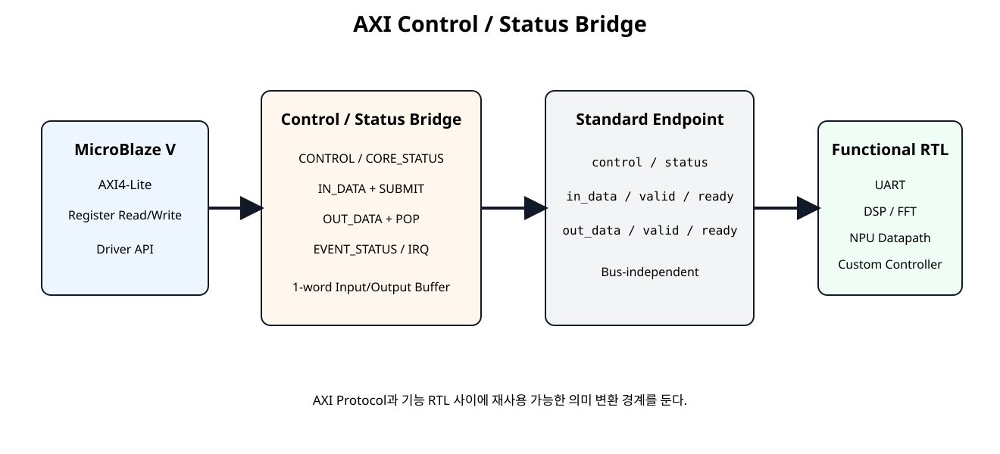
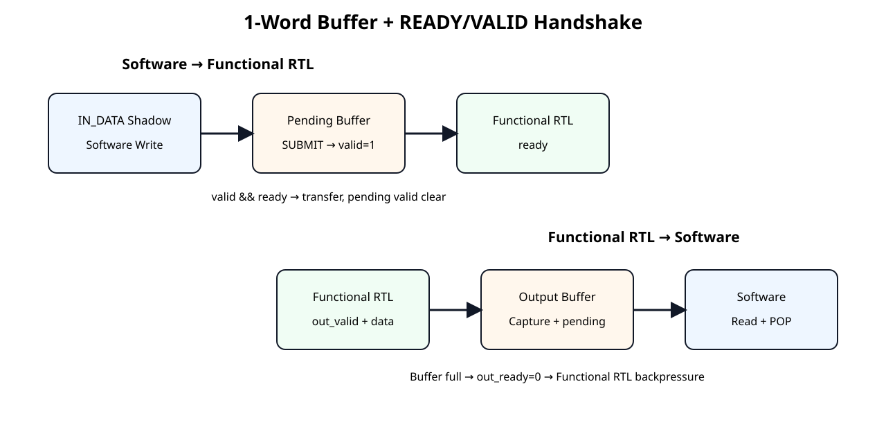
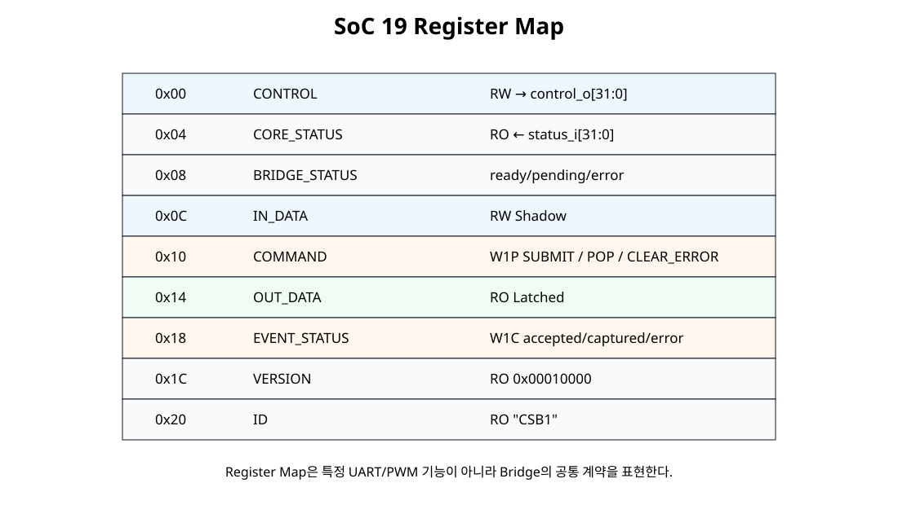

전체 학습 위치
이번 장의 목표
기능 RTL마다 AXI Register 코드를 반복하지 않고 공통 Bridge를 재사용할 수 있는 경계를 만든다.
SoC 18에서 왜 Bridge로 넘어가는가
UART와 PWM처럼 Register 의미가 크게 다른 Peripheral에는 전용 Register Bank가 적절하다. 하지만 NPU, DSP, 간단한 Accelerator처럼 “설정값 + 입력 Word + 결과 Word” 구조가 반복되면 공통 Bridge가 효율적이다.
전체 구조

원본 보기 ↗
표준 Endpoint Interface
control_o[31:0] // Software → RTL 지속 설정
status_i[31:0] // RTL → Software 상태
in_data_o[31:0]
in_valid_o
in_ready_i
out_data_i[31:0]
out_valid_i
out_ready_o이 인터페이스는 AXI4-Stream 전체 규격이 아니라 같은 READY/VALID Handshake 의미를 차용한 내부 표준이다.
READY/VALID 핵심 규칙

원본 보기 ↗
VALID가 1인데 READY가 0이면 Producer는 Data와 VALID를 유지해야 한다.
Register Map

원본 보기 ↗
CONTROL / CORE_STATUS
CONTROL은 32-bit RW Word를 그대로 control_o로 내보내고, CORE_STATUS는 기능 RTL의 status_i를 그대로 Software가 읽는다. Bit 의미는 연결되는 기능 RTL이 정의한다.
IN_DATA Shadow
Software는 먼저 IN_DATA Shadow Register에 값을 쓴다. 이 Write만으로 Functional RTL에 Data를 보내지 않는다.
SUBMIT와 Input Pending Buffer
SUBMIT 이후 Software가 IN_DATA Shadow를 바꾸어도 이미 Pending 중인 Data는 변하지 않는다.
Input Handshake
Output Capture Buffer
Bridge Output Buffer가 비어 있으면 out_ready_o=1이다. Functional RTL의 out_valid_i=1과 만나면 결과를 Capture하고 OUT_PENDING을 세운다.
OUT_DATA와 POP
Read 자체가 결과를 자동 삭제하지 않는다. 명시적인 POP으로 Software의 Read와 Buffer 소비를 분리한다.
Backpressure
Output Buffer가 차면 out_ready_o가 0이 되어 기능 RTL의 출력을 대기시킨다. Bridge 입력 버퍼에는 1개 요청만 대기할 수 있으며, IN_PENDING이 1인 동안 추가 SUBMIT은 거부한다. Core 내부 처리·출력 저장 공간은 Bridge 버퍼와 별도로 계산한다.out_ready_o=0이 되어 Functional RTL에 Backpressure를 건다. Input 쪽도 Pending Word가 존재하면 두 번째 Pending까지만 허용하고 추가 SUBMIT은 Error로 처리한다.
EVENT_STATUS와 IRQ
| Bit | Event |
|---|---|
| 0 | IN_ACCEPTED |
| 1 | OUT_CAPTURED |
| 2 | ERROR |
EVENT_STATUS는 W1C이며 하나라도 남아 있으면 irq_o=1이다.
Error 정책
- Input Pending 상태에서 다시 SUBMIT → ERROR
- Output Pending이 없는데 POP → ERROR
- CLEAR_ERROR는 Bridge Error Level만 지움
- EVENT_STATUS.ERROR는 별도 W1C
Bridge Core RTL
module control_status_bridge_core (
input wire clk,
input wire resetn,
// Bus-independent register access
input wire wr_en,
input wire [7:0] wr_offset,
input wire [31:0] wr_data,
input wire [3:0] wr_strb,
input wire [7:0] rd_offset,
output reg [31:0] rd_data,
// Generic control / status interface
output reg [31:0] control_o,
input wire [31:0] status_i,
// Software -> functional RTL
output reg [31:0] in_data_o,
output reg in_valid_o,
input wire in_ready_i,
// Functional RTL -> software
input wire [31:0] out_data_i,
input wire out_valid_i,
output wire out_ready_o,
// Event/interrupt visibility
output wire irq_o
);
localparam [7:0] REG_CONTROL = 8'h00;
localparam [7:0] REG_CORE_STATUS = 8'h04;
localparam [7:0] REG_BRIDGE_STATUS = 8'h08;
localparam [7:0] REG_IN_DATA = 8'h0C;
localparam [7:0] REG_COMMAND = 8'h10;
localparam [7:0] REG_OUT_DATA = 8'h14;
localparam [7:0] REG_EVENT_STATUS = 8'h18;
localparam [7:0] REG_VERSION = 8'h1C;
localparam [7:0] REG_ID = 8'h20;
localparam [31:0] VERSION_VALUE = 32'h0001_0000;
localparam [31:0] ID_VALUE = 32'h4353_4231; // ASCII "CSB1"
reg [31:0] in_data_shadow;
reg [31:0] out_data_latched;
reg out_pending;
reg error_status;
reg [2:0] event_status;
integer byte_index;
wire command_write;
wire command_submit;
wire command_pop_out;
wire command_clear_error;
wire event_write;
wire event_clear_in_accepted;
wire event_clear_out_captured;
wire event_clear_error;
wire in_handshake;
wire out_handshake;
wire submit_error;
wire pop_error;
wire error_event;
assign command_write =
wr_en &&
(wr_offset == REG_COMMAND) &&
wr_strb[0];
assign command_submit = command_write && wr_data[0];
assign command_pop_out = command_write && wr_data[1];
assign command_clear_error = command_write && wr_data[2];
assign event_write =
wr_en &&
(wr_offset == REG_EVENT_STATUS) &&
wr_strb[0];
assign event_clear_in_accepted = event_write && wr_data[0];
assign event_clear_out_captured = event_write && wr_data[1];
assign event_clear_error = event_write && wr_data[2];
assign in_handshake = in_valid_o && in_ready_i;
assign out_ready_o = !out_pending;
assign out_handshake = out_valid_i && out_ready_o;
assign submit_error = command_submit && in_valid_o;
assign pop_error = command_pop_out && !out_pending;
assign error_event = submit_error || pop_error;
assign irq_o = |event_status;
always @(posedge clk) begin
if (!resetn) begin
control_o <= 32'h0000_0000;
in_data_shadow <= 32'h0000_0000;
in_data_o <= 32'h0000_0000;
in_valid_o <= 1'b0;
out_data_latched <= 32'h0000_0000;
out_pending <= 1'b0;
error_status <= 1'b0;
end else begin
// General RW control word.
if (wr_en && (wr_offset == REG_CONTROL)) begin
for (byte_index = 0; byte_index < 4; byte_index = byte_index + 1) begin
if (wr_strb[byte_index]) begin
control_o[byte_index*8 +: 8] <=
wr_data[byte_index*8 +: 8];
end
end
end
// Software writes a shadow value first.
// SUBMIT copies this stable value into the pending transfer register.
if (wr_en && (wr_offset == REG_IN_DATA)) begin
for (byte_index = 0; byte_index < 4; byte_index = byte_index + 1) begin
if (wr_strb[byte_index]) begin
in_data_shadow[byte_index*8 +: 8] <=
wr_data[byte_index*8 +: 8];
end
end
end
// Existing pending input is released only after READY/VALID handshake.
if (in_handshake) begin
in_valid_o <= 1'b0;
end
// SUBMIT is rejected if one input word is already pending.
if (command_submit && !in_valid_o) begin
in_data_o <= in_data_shadow;
in_valid_o <= 1'b1;
end
// Software explicitly POPs an already captured output word.
if (command_pop_out && out_pending) begin
out_pending <= 1'b0;
end
// A new output transfer is captured whenever the bridge buffer is empty.
// Hardware capture has priority over a same-cycle empty POP.
if (out_handshake) begin
out_data_latched <= out_data_i;
out_pending <= 1'b1;
end
// Software clear has lower priority than a new bridge error.
if (command_clear_error) begin
error_status <= 1'b0;
end
if (error_event) begin
error_status <= 1'b1;
end
end
end
// Event status uses hardware-set priority over software W1C clear.
always @(posedge clk) begin
if (!resetn) begin
event_status <= 3'b000;
end else begin
if (in_handshake) begin
event_status[0] <= 1'b1;
end else if (event_clear_in_accepted) begin
event_status[0] <= 1'b0;
end
if (out_handshake) begin
event_status[1] <= 1'b1;
end else if (event_clear_out_captured) begin
event_status[1] <= 1'b0;
end
if (error_event) begin
event_status[2] <= 1'b1;
end else if (event_clear_error) begin
event_status[2] <= 1'b0;
end
end
end
always @(*) begin
case (rd_offset)
REG_CONTROL:
rd_data = control_o;
REG_CORE_STATUS:
rd_data = status_i;
REG_BRIDGE_STATUS:
rd_data = {
27'h0,
out_valid_i,
error_status,
out_pending,
in_valid_o,
in_ready_i
};
REG_IN_DATA:
rd_data = in_data_shadow;
REG_COMMAND:
rd_data = 32'h0000_0000;
REG_OUT_DATA:
rd_data = out_data_latched;
REG_EVENT_STATUS:
rd_data = {29'h0, event_status};
REG_VERSION:
rd_data = VERSION_VALUE;
REG_ID:
rd_data = ID_VALUE;
default:
rd_data = 32'h0000_0000;
endcase
end
endmodule
AXI Bridge Top
module axi_control_status_bridge_ip #(
parameter integer C_S_AXI_ADDR_WIDTH = 32
)(
input wire s_axi_aclk,
input wire s_axi_aresetn,
input wire [C_S_AXI_ADDR_WIDTH-1:0] s_axi_awaddr,
input wire [2:0] s_axi_awprot,
input wire s_axi_awvalid,
output wire s_axi_awready,
input wire [31:0] s_axi_wdata,
input wire [3:0] s_axi_wstrb,
input wire s_axi_wvalid,
output wire s_axi_wready,
output wire [1:0] s_axi_bresp,
output wire s_axi_bvalid,
input wire s_axi_bready,
input wire [C_S_AXI_ADDR_WIDTH-1:0] s_axi_araddr,
input wire [2:0] s_axi_arprot,
input wire s_axi_arvalid,
output wire s_axi_arready,
output wire [31:0] s_axi_rdata,
output wire [1:0] s_axi_rresp,
output wire s_axi_rvalid,
input wire s_axi_rready,
// Generic functional-RTL interface
output wire [31:0] control_o,
input wire [31:0] status_i,
output wire [31:0] in_data_o,
output wire in_valid_o,
input wire in_ready_i,
input wire [31:0] out_data_i,
input wire out_valid_i,
output wire out_ready_o,
output wire irq_o
);
// Pure connection wrapper:
// AXI transport and bridge semantics stay in independent modules.
wire wr_en;
wire [7:0] wr_offset;
wire [31:0] wr_data;
wire [3:0] wr_strb;
wire [7:0] rd_offset;
wire [31:0] rd_data;
axi4lite_slave_adapter #(
.C_S_AXI_ADDR_WIDTH(C_S_AXI_ADDR_WIDTH)
) u_axi4lite_slave_adapter (
.s_axi_aclk(s_axi_aclk),
.s_axi_aresetn(s_axi_aresetn),
.s_axi_awaddr(s_axi_awaddr),
.s_axi_awprot(s_axi_awprot),
.s_axi_awvalid(s_axi_awvalid),
.s_axi_awready(s_axi_awready),
.s_axi_wdata(s_axi_wdata),
.s_axi_wstrb(s_axi_wstrb),
.s_axi_wvalid(s_axi_wvalid),
.s_axi_wready(s_axi_wready),
.s_axi_bresp(s_axi_bresp),
.s_axi_bvalid(s_axi_bvalid),
.s_axi_bready(s_axi_bready),
.s_axi_araddr(s_axi_araddr),
.s_axi_arprot(s_axi_arprot),
.s_axi_arvalid(s_axi_arvalid),
.s_axi_arready(s_axi_arready),
.s_axi_rdata(s_axi_rdata),
.s_axi_rresp(s_axi_rresp),
.s_axi_rvalid(s_axi_rvalid),
.s_axi_rready(s_axi_rready),
.wr_en(wr_en),
.wr_offset(wr_offset),
.wr_data(wr_data),
.wr_strb(wr_strb),
.rd_offset(rd_offset),
.rd_data(rd_data)
);
control_status_bridge_core u_control_status_bridge_core (
.clk(s_axi_aclk),
.resetn(s_axi_aresetn),
.wr_en(wr_en),
.wr_offset(wr_offset),
.wr_data(wr_data),
.wr_strb(wr_strb),
.rd_offset(rd_offset),
.rd_data(rd_data),
.control_o(control_o),
.status_i(status_i),
.in_data_o(in_data_o),
.in_valid_o(in_valid_o),
.in_ready_i(in_ready_i),
.out_data_i(out_data_i),
.out_valid_i(out_valid_i),
.out_ready_o(out_ready_o),
.irq_o(irq_o)
);
endmodule
Top은 검증된 AXI4-Lite Adapter와 Bridge Core를 연결만 한다.
Example READY/VALID Core
module example_ready_valid_core #(
parameter integer PROCESS_CYCLES = 4
)(
input wire clk,
input wire resetn,
input wire [31:0] control_i,
output wire [31:0] status_o,
input wire [31:0] in_data_i,
input wire in_valid_i,
output wire in_ready_o,
output reg [31:0] out_data_o,
output reg out_valid_o,
input wire out_ready_i
);
localparam [1:0] ST_IDLE = 2'd0;
localparam [1:0] ST_RUN = 2'd1;
localparam [1:0] ST_OUT = 2'd2;
reg [1:0] state;
reg [7:0] cycles_left;
reg [31:0] data_latched;
reg [1:0] mode_latched;
wire input_handshake;
wire output_handshake;
assign in_ready_o = (state == ST_IDLE);
assign input_handshake = in_valid_i && in_ready_o;
assign output_handshake = out_valid_o && out_ready_i;
assign status_o = {
28'h0,
out_valid_o,
(state == ST_RUN),
(state == ST_IDLE),
in_ready_o
};
function [31:0] process_value;
input [31:0] value;
input [1:0] mode;
begin
case (mode)
2'b00: process_value = value;
2'b01: process_value = value + 32'd1;
2'b10: process_value = value << 1;
2'b11: process_value = ~value;
default: process_value = value;
endcase
end
endfunction
always @(posedge clk) begin
if (!resetn) begin
state <= ST_IDLE;
cycles_left <= 8'd0;
data_latched <= 32'h0000_0000;
mode_latched <= 2'b00;
out_data_o <= 32'h0000_0000;
out_valid_o <= 1'b0;
end else begin
case (state)
ST_IDLE: begin
out_valid_o <= 1'b0;
if (input_handshake) begin
data_latched <= in_data_i;
mode_latched <= control_i[1:0];
if (PROCESS_CYCLES <= 1) begin
cycles_left <= 8'd0;
end else begin
cycles_left <= PROCESS_CYCLES - 1;
end
state <= ST_RUN;
end
end
ST_RUN: begin
if (cycles_left != 0) begin
cycles_left <= cycles_left - 1'b1;
end else begin
out_data_o <= process_value(data_latched, mode_latched);
out_valid_o <= 1'b1;
state <= ST_OUT;
end
end
ST_OUT: begin
if (output_handshake) begin
out_valid_o <= 1'b0;
state <= ST_IDLE;
end
end
default: begin
state <= ST_IDLE;
out_valid_o <= 1'b0;
end
endcase
end
end
endmodule
Mode 0~3의 단순 연산을 수행하며 Output READY가 내려가면 결과 VALID/Data를 유지한다.
Driver API
#include "axi_control_status_bridge_driver.h"
static int CsbDrv_CheckReady(const CsbDrv *InstancePtr)
{
if (InstancePtr == 0) {
return CSBDRV_ERR_PARAM;
}
if (InstancePtr->IsReady != CSBDRV_READY_MAGIC) {
return CSBDRV_ERR_NOT_READY;
}
return CSBDRV_OK;
}
int CsbDrv_Initialize(CsbDrv *InstancePtr, UINTPTR BaseAddress)
{
if (InstancePtr == 0) {
return CSBDRV_ERR_PARAM;
}
if ((BaseAddress & 0x3U) != 0U) {
return CSBDRV_ERR_PARAM;
}
InstancePtr->BaseAddress = BaseAddress;
InstancePtr->IsReady = 0U;
if (Csb_ReadReg(BaseAddress, CSB_ID_OFFSET) != CSB_ID_VALUE) {
return CSBDRV_ERR_ID;
}
if (Csb_ReadReg(BaseAddress, CSB_VERSION_OFFSET) != CSB_VERSION_VALUE) {
return CSBDRV_ERR_ID;
}
InstancePtr->IsReady = CSBDRV_READY_MAGIC;
return CSBDRV_OK;
}
int CsbDrv_SetControl(CsbDrv *InstancePtr, u32 ControlWord)
{
int rc = CsbDrv_CheckReady(InstancePtr);
if (rc != CSBDRV_OK) {
return rc;
}
Csb_WriteReg(
InstancePtr->BaseAddress,
CSB_CONTROL_OFFSET,
ControlWord
);
return CSBDRV_OK;
}
int CsbDrv_GetCoreStatus(CsbDrv *InstancePtr, u32 *StatusWord)
{
int rc = CsbDrv_CheckReady(InstancePtr);
if (rc != CSBDRV_OK) {
return rc;
}
if (StatusWord == 0) {
return CSBDRV_ERR_PARAM;
}
*StatusWord = Csb_ReadReg(
InstancePtr->BaseAddress,
CSB_CORE_STATUS_OFFSET
);
return CSBDRV_OK;
}
int CsbDrv_GetBridgeStatus(CsbDrv *InstancePtr, u32 *StatusWord)
{
int rc = CsbDrv_CheckReady(InstancePtr);
if (rc != CSBDRV_OK) {
return rc;
}
if (StatusWord == 0) {
return CSBDRV_ERR_PARAM;
}
*StatusWord = Csb_ReadReg(
InstancePtr->BaseAddress,
CSB_BRIDGE_STATUS_OFFSET
);
return CSBDRV_OK;
}
int CsbDrv_GetEvents(CsbDrv *InstancePtr, u32 *EventWord)
{
int rc = CsbDrv_CheckReady(InstancePtr);
if (rc != CSBDRV_OK) {
return rc;
}
if (EventWord == 0) {
return CSBDRV_ERR_PARAM;
}
*EventWord = Csb_ReadReg(
InstancePtr->BaseAddress,
CSB_EVENT_STATUS_OFFSET
);
return CSBDRV_OK;
}
int CsbDrv_ClearEvents(CsbDrv *InstancePtr, u32 EventMask)
{
int rc = CsbDrv_CheckReady(InstancePtr);
u32 valid_mask;
if (rc != CSBDRV_OK) {
return rc;
}
valid_mask =
CSB_EVENT_IN_ACCEPTED_MASK |
CSB_EVENT_OUT_CAPTURED_MASK |
CSB_EVENT_ERROR_MASK;
Csb_WriteReg(
InstancePtr->BaseAddress,
CSB_EVENT_STATUS_OFFSET,
EventMask & valid_mask
);
return CSBDRV_OK;
}
int CsbDrv_ClearError(CsbDrv *InstancePtr)
{
int rc = CsbDrv_CheckReady(InstancePtr);
if (rc != CSBDRV_OK) {
return rc;
}
Csb_WriteReg(
InstancePtr->BaseAddress,
CSB_COMMAND_OFFSET,
CSB_COMMAND_CLEAR_ERROR_MASK
);
return CSBDRV_OK;
}
int CsbDrv_Submit(CsbDrv *InstancePtr, u32 InputWord)
{
int rc;
u32 status;
rc = CsbDrv_GetBridgeStatus(InstancePtr, &status);
if (rc != CSBDRV_OK) {
return rc;
}
if ((status & CSB_BRIDGE_ERROR_MASK) != 0U) {
return CSBDRV_ERR_HW;
}
if ((status & CSB_BRIDGE_IN_PENDING_MASK) != 0U) {
return CSBDRV_ERR_BUSY;
}
Csb_WriteReg(
InstancePtr->BaseAddress,
CSB_IN_DATA_OFFSET,
InputWord
);
Csb_WriteReg(
InstancePtr->BaseAddress,
CSB_COMMAND_OFFSET,
CSB_COMMAND_SUBMIT_MASK
);
return CSBDRV_OK;
}
int CsbDrv_OutputAvailable(CsbDrv *InstancePtr)
{
int rc;
u32 status;
rc = CsbDrv_GetBridgeStatus(InstancePtr, &status);
if (rc != CSBDRV_OK) {
return rc;
}
if ((status & CSB_BRIDGE_ERROR_MASK) != 0U) {
return CSBDRV_ERR_HW;
}
return ((status & CSB_BRIDGE_OUT_PENDING_MASK) != 0U) ? 1 : 0;
}
int CsbDrv_GetOutput(CsbDrv *InstancePtr, u32 *OutputWord)
{
int available;
if (OutputWord == 0) {
return CSBDRV_ERR_PARAM;
}
available = CsbDrv_OutputAvailable(InstancePtr);
if (available < 0) {
return available;
}
if (available == 0) {
return CSBDRV_ERR_NO_OUTPUT;
}
*OutputWord = Csb_ReadReg(
InstancePtr->BaseAddress,
CSB_OUT_DATA_OFFSET
);
return CSBDRV_OK;
}
int CsbDrv_PopOutput(CsbDrv *InstancePtr)
{
int available;
available = CsbDrv_OutputAvailable(InstancePtr);
if (available < 0) {
return available;
}
if (available == 0) {
return CSBDRV_ERR_NO_OUTPUT;
}
Csb_WriteReg(
InstancePtr->BaseAddress,
CSB_COMMAND_OFFSET,
CSB_COMMAND_POP_OUT_MASK
);
return CSBDRV_OK;
}
int CsbDrv_RunBlocking(
CsbDrv *InstancePtr,
u32 ControlWord,
u32 InputWord,
u32 PollLimit,
u32 *OutputWord
)
{
u32 k;
int rc;
int available;
if ((OutputWord == 0) || (PollLimit == 0U)) {
return CSBDRV_ERR_PARAM;
}
rc = CsbDrv_ClearError(InstancePtr);
if (rc != CSBDRV_OK) {
return rc;
}
rc = CsbDrv_ClearEvents(
InstancePtr,
CSB_EVENT_IN_ACCEPTED_MASK |
CSB_EVENT_OUT_CAPTURED_MASK |
CSB_EVENT_ERROR_MASK
);
if (rc != CSBDRV_OK) {
return rc;
}
rc = CsbDrv_SetControl(
InstancePtr,
ControlWord
);
if (rc != CSBDRV_OK) {
return rc;
}
rc = CsbDrv_Submit(
InstancePtr,
InputWord
);
if (rc != CSBDRV_OK) {
return rc;
}
for (k = 0U; k < PollLimit; k++) {
available = CsbDrv_OutputAvailable(InstancePtr);
if (available < 0) {
return available;
}
if (available != 0) {
rc = CsbDrv_GetOutput(
InstancePtr,
OutputWord
);
if (rc != CSBDRV_OK) {
return rc;
}
return CsbDrv_PopOutput(InstancePtr);
}
}
return CSBDRV_ERR_TIMEOUT;
}
RunBlocking 흐름
Polling API이지만 Bridge Interface 자체는 READY/VALID이므로 이후 Interrupt 방식으로 확장해도 Functional RTL은 변경할 필요가 없다.
실제 Driver Mock Test
PASS: CSB Initialize
PASS: CSB RunBlocking ADD1
PASS: CSB output 9 -> 10
PASS: CSB GetEvents
PASS: CSB input/output events
PASS: CSB output already popped by RunBlocking
PASS: CSB pending input BUSY
PASS: CSB hardware error
SOC19 BRIDGE DRIVER MOCK TEST: PASSSelf-Checking AXI Testbench
`timescale 1ns / 1ps
module tb_axi_control_status_bridge_demo_top;
localparam integer ADDR_W = 32;
reg clk = 1'b0;
reg resetn = 1'b0;
always #5 clk = ~clk;
reg [ADDR_W-1:0] awaddr = 0;
reg [2:0] awprot = 0;
reg awvalid = 0;
wire awready;
reg [31:0] wdata = 0;
reg [3:0] wstrb = 0;
reg wvalid = 0;
wire wready;
wire [1:0] bresp;
wire bvalid;
reg bready = 0;
reg [ADDR_W-1:0] araddr = 0;
reg [2:0] arprot = 0;
reg arvalid = 0;
wire arready;
wire [31:0] rdata;
wire [1:0] rresp;
wire rvalid;
reg rready = 0;
wire irq_o;
integer errors = 0;
integer k;
reg [31:0] rd;
axi_control_status_bridge_demo_top #(
.C_S_AXI_ADDR_WIDTH(ADDR_W),
.PROCESS_CYCLES(6)
) dut (
.s_axi_aclk(clk),
.s_axi_aresetn(resetn),
.s_axi_awaddr(awaddr),
.s_axi_awprot(awprot),
.s_axi_awvalid(awvalid),
.s_axi_awready(awready),
.s_axi_wdata(wdata),
.s_axi_wstrb(wstrb),
.s_axi_wvalid(wvalid),
.s_axi_wready(wready),
.s_axi_bresp(bresp),
.s_axi_bvalid(bvalid),
.s_axi_bready(bready),
.s_axi_araddr(araddr),
.s_axi_arprot(arprot),
.s_axi_arvalid(arvalid),
.s_axi_arready(arready),
.s_axi_rdata(rdata),
.s_axi_rresp(rresp),
.s_axi_rvalid(rvalid),
.s_axi_rready(rready),
.irq_o(irq_o)
);
task automatic axi_write;
input [31:0] addr;
input [31:0] data;
begin
@(negedge clk);
awaddr = addr;
awvalid = 1'b1;
wait (awready === 1'b1);
@(negedge clk);
awvalid = 1'b0;
@(negedge clk);
wdata = data;
wstrb = 4'b1111;
wvalid = 1'b1;
wait (wready === 1'b1);
@(negedge clk);
wvalid = 1'b0;
bready = 1'b1;
wait (bvalid === 1'b1);
@(posedge clk);
@(negedge clk);
bready = 1'b0;
end
endtask
task automatic axi_read;
input [31:0] addr;
output [31:0] data;
begin
@(negedge clk);
araddr = addr;
arvalid = 1'b1;
wait (arready === 1'b1);
@(negedge clk);
arvalid = 1'b0;
rready = 1'b1;
wait (rvalid === 1'b1);
data = rdata;
@(posedge clk);
@(negedge clk);
rready = 1'b0;
end
endtask
task automatic expect32;
input [31:0] actual;
input [31:0] expected;
input [8*64-1:0] label;
begin
if (actual !== expected) begin
$display("FAIL: %0s actual=%08h expected=%08h",
label, actual, expected);
errors = errors + 1;
end else begin
$display("PASS: %0s = %08h", label, actual);
end
end
endtask
task automatic wait_out_pending;
begin
rd = 0;
for (k = 0; k < 100; k = k + 1) begin
axi_read(32'h00000008, rd);
if (rd[2]) begin
k = 100;
end
end
if (!rd[2]) begin
$display("FAIL: timeout waiting for OUT_PENDING");
errors = errors + 1;
end
end
endtask
initial begin
repeat (5) @(posedge clk);
resetn = 1'b1;
repeat (3) @(posedge clk);
// Identification
axi_read(32'h00000020, rd);
expect32(rd, 32'h43534231, "CSB ID");
axi_read(32'h0000001C, rd);
expect32(rd, 32'h00010000, "CSB VERSION");
// Mode 1: add 1
axi_write(32'h00000000, 32'h00000001);
axi_write(32'h0000000C, 32'h00000009);
axi_write(32'h00000010, 32'h00000001);
wait_out_pending();
axi_read(32'h00000014, rd);
expect32(rd, 32'h0000000A, "First output");
axi_read(32'h00000018, rd);
if ((rd & 32'h00000003) != 32'h00000003) begin
$display("FAIL: IN_ACCEPTED and OUT_CAPTURED events expected");
errors = errors + 1;
end else begin
$display("PASS: input/output events latched");
end
if (!irq_o) begin
$display("FAIL: irq_o should be high while events are pending");
errors = errors + 1;
end
// Queue a second input while first output is still pending.
axi_write(32'h0000000C, 32'h00000003);
axi_write(32'h00000010, 32'h00000001);
// (변경) Core가 두 번째 입력을 수락한 뒤 출력에서 정지할 때까지 기다린다.
// 첫 결과는 Bridge 출력 버퍼, 두 번째 결과는 Core에 보관된다.
repeat (12) @(negedge clk);
// (추가) 세 번째 입력을 Bridge 입력 버퍼에 대기시킨다.
axi_write(32'h0000000C, 32'h00000007);
axi_write(32'h00000010, 32'h00000001);
// (변경) 네 번째 SUBMIT은 이미 대기 중인 세 번째 입력 때문에 거부된다.
axi_write(32'h0000000C, 32'h00000007);
axi_write(32'h00000010, 32'h00000001);
axi_read(32'h00000008, rd);
if (!rd[3]) begin
$display("FAIL: bridge error expected after submit while pending");
errors = errors + 1;
end else begin
$display("PASS: submit while pending sets bridge error");
end
// Release first output.
axi_write(32'h00000010, 32'h00000002);
// Clear bridge error/event, then allow queued second request to complete.
axi_write(32'h00000010, 32'h00000004);
axi_write(32'h00000018, 32'h00000007);
wait_out_pending();
axi_read(32'h00000014, rd);
expect32(rd, 32'h00000004, "Queued second output");
// POP second result.
axi_write(32'h00000010, 32'h00000002);
// (추가) 세 번째 요청도 보관되므로 마지막 결과를 먼저 회수한다.
wait_out_pending();
axi_read(32'h00000014, rd);
expect32(rd, 32'h00000008, "Queued third output");
axi_write(32'h00000010, 32'h00000002);
// (변경) 모든 수락된 결과를 POP한 뒤 Empty를 검사한다.
axi_read(32'h00000008, rd);
if (rd[2]) begin
$display("FAIL: OUT_PENDING should clear after POP");
errors = errors + 1;
end else begin
$display("PASS: OUT_PENDING cleared");
end
// POP on empty output buffer must set ERROR.
axi_write(32'h00000010, 32'h00000002);
axi_read(32'h00000008, rd);
if (!rd[3]) begin
$display("FAIL: POP on empty buffer should set ERROR");
errors = errors + 1;
end else begin
$display("PASS: empty POP sets ERROR");
end
if (errors == 0) begin
$display("SOC19 AXI CONTROL/STATUS BRIDGE TEST: PASS");
end else begin
$display("SOC19 AXI CONTROL/STATUS BRIDGE TEST: FAIL (%0d)",
errors);
end
#50;
$finish;
end
endmodule
첫 결과를 POP하지 않은 상태에서 두 번째 입력을 Queue하고, 세 번째 SUBMIT으로 Pending Error를 발생시키는 Backpressure 시나리오까지 포함한다.
UART 연결 예
UART TX처럼 Byte Command형 RTL은 전용 Register Bank가 더 직관적일 수 있다. Bridge를 사용하려면 in_data[7:0]를 TX Byte로, in_valid/ready를 SEND/BUSY 관계로 Adapter하면 된다.
PWM 연결 시 주의
PWM은 지속 설정값과 Atomic Update가 핵심이므로 SoC 18의 전용 Shadow Register 구조가 더 적절하다. 범용 Bridge를 쓸 수 있다는 이유만으로 모든 Peripheral에 적용하지 않는다.
NPU/FFT 연결 방향
한두 Word의 Command/Result는 SoC 19 Bridge로 충분하다. Tensor나 연속 Sample처럼 대량 Data가 필요하면 CONTROL/STATUS는 AXI4-Lite, Data Path는 AXI4-Stream으로 분리하는 구조가 자연스럽다.
AXI4-Stream과의 차이
| SoC 19 내부 Interface | AXI4-Stream |
|---|---|
| data/valid/ready 핵심만 사용 | TDATA/TVALID/TREADY + optional TLAST/TKEEP/TUSER 등 |
| 1-Word Software Bridge | 연속 고속 Data 전송 |
| AXI4-Lite Register가 전면 | 주소 없는 Stream Channel |
Packaging Source
axi_control_status_bridge_1_0/
├── hdl/
│ ├── axi4lite_slave_adapter.v
│ ├── control_status_bridge_core.v
│ ├── axi_control_status_bridge_ip.v
│ ├── example_ready_valid_core.v
│ └── axi_control_status_bridge_demo_top.v
├── testbench/
│ └── tb_axi_control_status_bridge_demo_top.v
├── drivers/axi_control_status_bridge_v1_0/src/
│ ├── axi_control_status_bridge_regmap.h
│ ├── axi_control_status_bridge_driver.h
│ └── axi_control_status_bridge_driver.c
├── examples/
│ └── test_axi_control_status_bridge_driver_mock.c
├── doc/
│ └── README_PACKAGE.md
└── tcl/
└── prepare_packaging_project.tcl
Vivado Packaging
Packaging Top은 axi_control_status_bridge_ip이다. Demo Core는 검증용이며 Packaged Bridge의 필수 기능이 아니다. Vivado IP Packager가 Top HDL을 Parsing해 AXI Port/Interface를 구성한다.
오류 점검
| 증상 | 원인 | 확인 |
|---|---|---|
| 입력 Data가 중간에 바뀜 | Shadow를 Pending에 Capture하지 않음 | SUBMIT 시 in_data_o Capture |
| Functional RTL이 결과를 덮어씀 | Backpressure 무시 | out_ready_o |
| 결과 Read 후 자동 소실 | Read와 Consume 혼합 | OUT_DATA + POP 분리 |
| 두 번째 SUBMIT이 첫 Pending을 덮음 | Pending Guard 누락 | IN_PENDING Error |
| IRQ가 계속 High | EVENT_STATUS W1C 미처리 | Event Clear |
| 고속 Tensor를 Bridge로 전송 | 용도 선택 오류 | AXI4-Stream 사용 검토 |
SoC 19 완료 체크리스트
- [ ] AXI4-Lite와 기능 RTL 사이에 공통 Bridge를 분리했다.
- [ ] control/status와 input/output READY/VALID Interface를 정의했다.
- [ ] IN_DATA Shadow와 Pending Buffer를 분리했다.
- [ ] VALID는 READY Handshake까지 유지된다.
- [ ] Output을 1-Word Buffer에 Capture하고 Software POP까지 유지한다.
- [ ] Output Buffer가 차면 Backpressure를 건다.
- [ ] EVENT_STATUS를 W1C로 유지하고 irq_o를 생성한다.
- [ ] 잘못된 SUBMIT/POP을 Bridge Error로 처리한다.
- [ ] 기존 AXI4-Lite Adapter를 바이트 단위 재사용한다.
- [ ] Driver Mock Test를 실제 Compile/Run했다.
- [ ] Bridge를 AXI4-Stream 전체 규격과 혼동하지 않는다.
- [ ] 고속 Data Path는 향후 AXI4-Stream으로 분리한다.
공식 매뉴얼 및 원본 근거
| 문서 | 확인 항목 |
|---|---|
| AMD UG1118 · Ports and Interfaces · 2026.1 | Custom IP Top HDL Parsing과 Interface 추론 |
| AMD PG292 · AXI4-Lite Interface Ports · 2026 | AW/W/B/AR/R 및 WSTRB 정의 |
| AMD PG109 · Basic Handshake · 2026 | TVALID/TREADY 동시 High에서 전송 성립 |
| AMD UG1483 · AXI4-Stream Support · 2026.1 | TDATA/TVALID/TREADY 기본 신호와 방향 |
| AMD UG1399 · How AXI4-Stream Works · 2026.1 | 고속 Stream Data Path와 Handshake 개념 비교 |